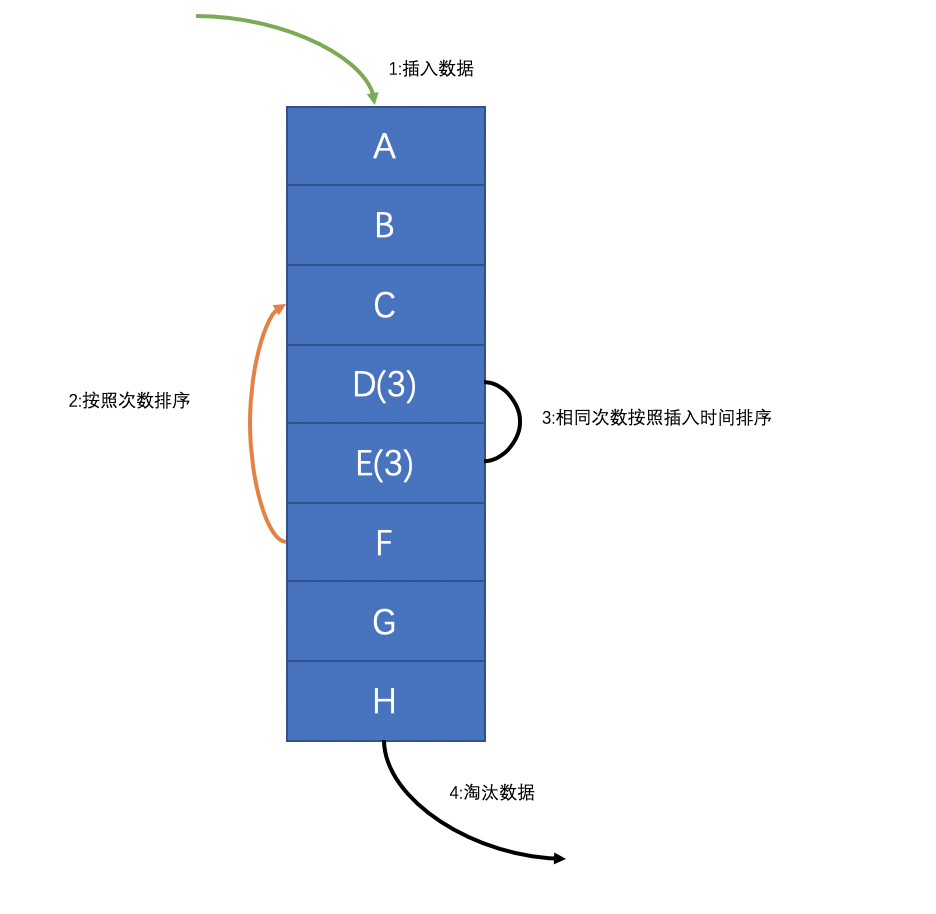
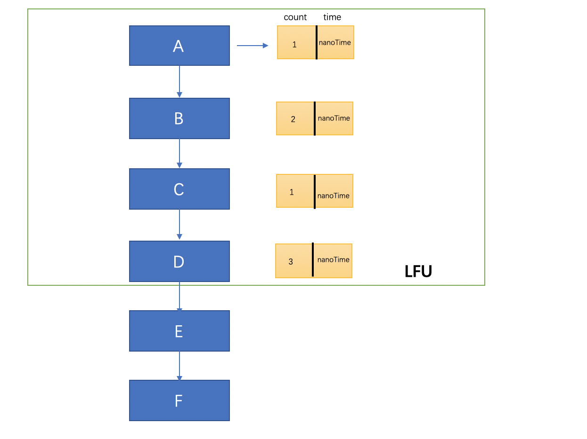
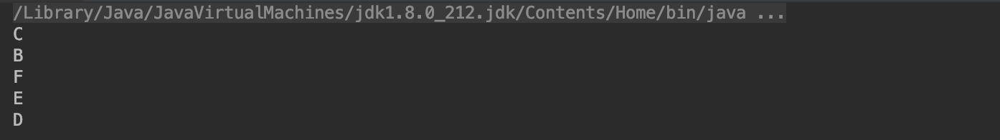

前言:之前有写过一篇关于LRU的文章链接https://www.cnblogs.com/wyq178/p/9976815.html LRU全称:Least Recently Used:最近最少使用策略,判断最近被使用的时间,距离目前最远的数据优先被淘汰,作为一种根据访问时间来更改链表顺序从而实现缓存淘汰的算法,它是redis采用的淘汰算法之一。redis还有一个缓存策略叫做LFU, 那么LFU是什么呢？我们本期博客来分下一下LFU：
本篇博客的目录：
一: LRU是什么
二：LRU的实现
三：测试
五：总结
正文
一：LRU是什么
LFU,全称是:Least Frequently Used，最不经常使用策略,在一段时间内,数据被使用频次最少的,优先被淘汰。最少使用（LFU）是一种用于管理计算机内存的缓存算法。主要是记录和追踪内存块的使用次数,当缓存已满并且需要更多空间时，系统将以最低内存块使用频率清除内存.采用LFU算法的最简单方法是为每个加载到缓存的块分配一个计数器。每次引用该块时，计数器将增加一。当缓存达到容量并有一个新的内存块等待插入时，系统将搜索计数器最低的块并将其从缓存中删除(本段摘自维基百科)

解释:上面这个图就是一个LRU的简单实现思路,在链表的开始插入元素，然后每插入一次计数一次,接着按照次数重新排序链表，如果次数相同的话，按照插入时间排序，然后从链表尾部选择淘汰的数据~
二：LRU实现
2.1 定义Node节点
Node主要包含了key和value,因为LFU的主要实现思想是比较访问的次数,如果在次数相同的情况下需要比较节点的时间,越早放入的越快 被淘汰,因此我们需要在Node节点上加入time和count的属性,分别用来记录节点的访问的时间和访问次数。其他的版本实现方式里有新加个内部类来记录 key的count和time,但是我觉得不够方便,还得单独维护一个map,成本有点大。还有一点注意的是这里实现了comparable接口，覆写了compare方法，这里 的主要作用就是在排序的时候需要用到，在compare方法里面我们首先比较节点的访问次数，在访问次数相同的情况下比较节点的访问时间,这里是为了 在排序方法里面通过比较key来选择淘汰的key
/**
* 节点
*/
public static class Node implements Comparable<Node>{
//键
Object key;
//值
Object value;
/**
* 访问时间
*/
long time;
/**
* 访问次数
*/
int count;
public Node(Object key, Object value, long time, int count) {
this.key = key;
this.value = value;
this.time = time;
this.count = count;
}
public Object getKey() {
return key;
}
public void setKey(Object key) {
this.key = key;
}
public Object getValue() {
return value;
}
public void setValue(Object value) {
this.value = value;
}
public long getTime() {
return time;
}
public void setTime(long time) {
this.time = time;
}
public int getCount() {
return count;
}
public void setCount(int count) {
this.count = count;
}
@Override
public int compareTo(Node o) {
int compare = Integer.compare(this.count, o.count);
//在数目相同的情况下 比较时间
if (compare==0){
return Long.compare(this.time,o.time);
}
return compare;
}
}
2.2:定义LFU类
定义LFU类,这里采用了泛型,声明了K和V,还有总容量和一个Map(caches)用来维护所有的节点。在构造方法里将size传递进去,并且创建了一个LinkedHashMap，采用linkedHashMap的主要原因是维护key的顺序
public class LFU<K,V> {
/**
* 总容量
*/
private int capacity;
/**
* 所有的node节点
*/
private Map<K, Node> caches;
/**
* 构造方法
* @param size
*/
public LFU(int size) {
this.capacity = size;
caches = new LinkedHashMap<K,Node>(size);
}
}2.3: 添加元素
添加元素的逻辑主要是先从缓存中根据key获取节点，如果获取不到，证明是新添加的元素，然后和容量比较，大于预定容量的话，需要找出count计数最小(计数相同的情况下,选择时间最久)的节点，然后移除掉那个。如果在预定的大小之内，就新创建节点，注意这里不能使用 System.currentTimeMillis()方法，因为毫秒级别的粒度无法对插入的时间进行区分,在运行比较快的情况下，只有System.nanoTime()才可以将key的插入时间区分，默认设置count计数为1.如果能获取到，表示是旧的元素，那么就用新值覆盖旧值，计数+1,设置key的time为当前纳秒时间。最后还需要进行排序，这里可以看出插入元素的逻辑主要是添加进入缓存,更新元素的时间和计数~
/**
* 添加元素
* @param key
* @param value
*/
public void put(K key, V value) {
Node node = caches.get(key);
//如果新元素
if (node == null) {
//如果超过元素容纳量
if (caches.size() >= capacity) {
//移除count计数最小的那个key
K leastKey = removeLeastCount();
caches.remove(leastKey);
}
//创建新节点
node = new Node(key,value,System.nanoTime(),1);
caches.put(key, node);
}else {
//已经存在的元素覆盖旧值
node.value = value;
node.setCount(node.getCount()+1);
node.setTime(System.nanoTime());
}
sort();
}每次put或者get元素都需要进行排序，排序的主要意义在于按照key的cout和time进行一个key顺序的重组，这里的逻辑是首先将缓存map创建成一个list,然后按照Node的value进行，重组整个map。然后将原来的缓存清空，遍历这个map， 把key和value的值放进去原来的缓存中的顺序就进行了重组~这里区分于LRU的不同点在于使用了java的集合API，LRU的排序是进行节点移动。而在LFU中实现比较复杂,因为put的时候不光得比较基数还有时间。如果不借助java的API的话，可以新维护一个节点频率链表,每次将key保存在这个节点频率链表中移动指针，从而也间接可以实现排序~
/**
* 排序
*/
private void sort() {
List<Map.Entry<K, Node>> list = new ArrayList<>(caches.entrySet());
Collections.sort(list, new Comparator<Map.Entry<K, Node>>() {
@Override
public int compare(Map.Entry<K, Node> o1, Map.Entry<K, Node> o2) {
return o2.getValue().compareTo(o1.getValue());
}
});
caches.clear();
for (Map.Entry<K, Node> kNodeEntry : list) {
caches.put(kNodeEntry.getKey(),kNodeEntry.getValue());
}
}移除最小的元素
淘汰最小的元素这里调用了Collections.min方法，然后通过比较key的compare方法，找到计数最小和时间最长的元素，直接从缓存中移除~
/**
* 移除统计数或者时间比较最小的那个
* @return
*/
private K removeLeastCount() {
Collection<Node> values = caches.values();
Node min = Collections.min(values);
return (K)min.getKey();
}2.4:获取元素
获取元素首先是从缓存map中获取，否则返回null，在获取到元素之后需要进行节点的更新，计数+1和刷新节点的时间，根据LFU的原则，在当前时间获取到这个节点以后，这个节点就暂时变成了热点节点，但是它的cout计数也有可能是小于某个节点的count的，所以
此时不能将它直接移动到链表顶，还需要进行一次排序，重组它的位置~
/**
* 获取元素
* @param key
* @return
*/
public V get(K key){
Node node = caches.get(key);
if (node!=null){
node.setCount(node.getCount()+1);
node.setTime(System.nanoTime());
sort();
return (V)node.value;
}
return null;
}首先声明一个LRU，然后默认的最大的大小为5，依次put进入A、B、C、D、E、F6个元素,此时将会找到计数最小和时间最短的元素,那么将会淘汰A(因为count值都是1)。记着get两次B元素，那么B元素的count=3,时间更新为最新。此时B将会移动到顶，接着在getC元素,C元素的count=2，时间会最新，那么此时因为它的count值依然小于B,所以它依然在B后面，再getF元素，F元素的count=2,又因为它的时间会最新，所以在与C相同的计数下，F元素更新(时间距离现在最近)，所以链表将会移动，F会在C的前面，再次put一次C,此时C的count=3,同时时间为最新,那么此刻C的count和B保持一致，则他们比较时间，C明显更新，所以C将会排在B的前面，最终的顺序应该是:C->B->F->E->D
public static void main(String[] args) {
LFU<Integer, String> lruCache = new LFU<>(5);
lruCache.put(1, "A");
lruCache.put(2, "B");
lruCache.put(3, "C");
lruCache.put(4, "D");
lruCache.put(5, "E");
lruCache.put(6, "F");
lruCache.get(2);
lruCache.get(2);
lruCache.get(3);
lruCache.get(6);
//重新put节点3
lruCache.put(3,"C"); final Map<Integer, Node> caches = (Map<Integer, Node>) lruCache.caches; for (Map.Entry<Integer, Node> nodeEntry : caches.entrySet()) { System.out.println(nodeEntry.getValue().value); } }运行结果：

LRU和LFU侧重点不同，LRU主要体现在对元素的使用时间上,而LFU主要体现在对元素的使用频次上。LFU的缺陷是：在短期的时间内，对某些缓存的访问频次很高，这些缓存会立刻晋升为热点数据，而保证不会淘汰，这样会驻留在系统内存里面。而实际上，这部分数据只是短暂的高频率访问，之后将会长期不访问,瞬时的高频访问将会造成这部分数据的引用频率加快，而一些新加入的缓存很容易被快速删除，因为它们的引用频率很低。
五：总结
本篇博客针对LFU做了一个简单的介绍，并详细介绍了如何用java来实现LFU，并且和LRU做了一个简单的比较。针对一种缓存策略。LFU有自己的独特使用场景，如何实现LFU和利用LFU的特性来实现开发过程部分功能是我们需要思考的。实际在使用中LRU的使用频率要高于LFU,不过了解这种算法也算是程序员的必备技能。
最后: 如果对学习java有兴趣可以加入群:618626589,本群旨在打造无培训广告、无闲聊扯皮、无注水斗图的纯技术交流群，群里每天会分享有价值的问题和学习资料,欢迎各位随时加入～